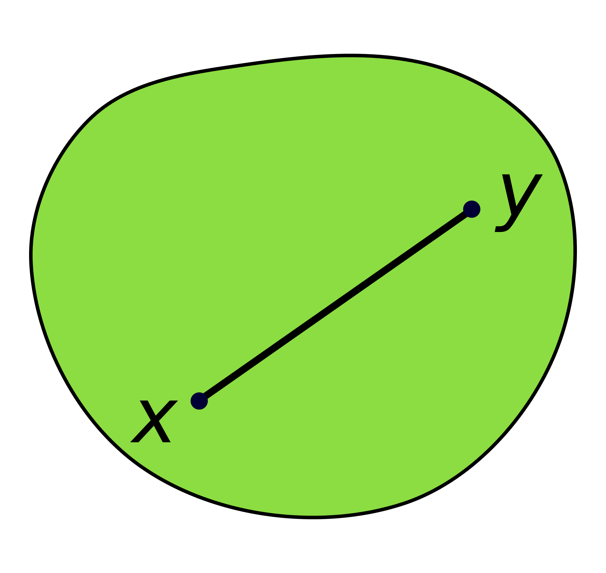
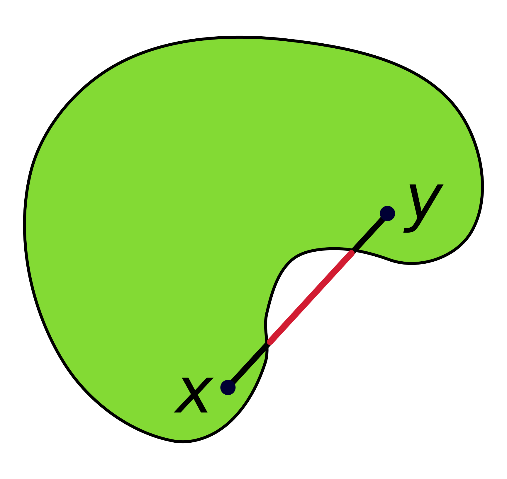
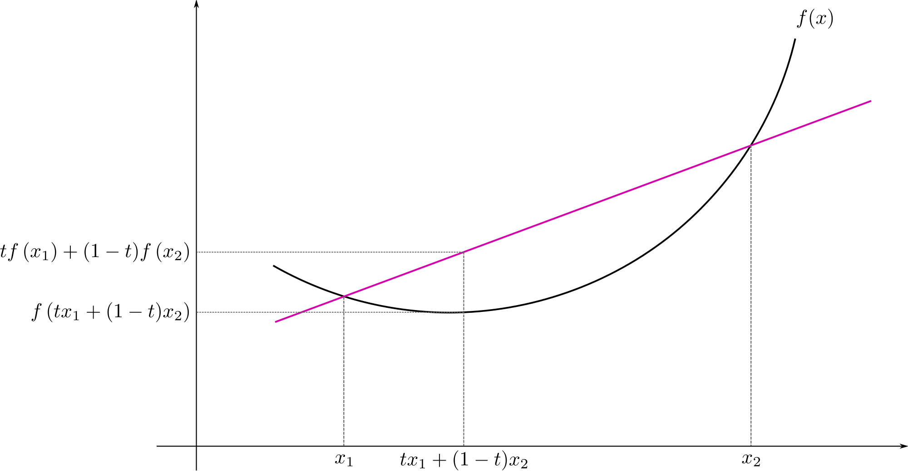

Calculus and Optimization#
Much of machine learning is about minimizing a cost function (also called an objective function in the optimization community), which is a scalar function of several variables that typically measures how poorly our model fits the data we have.
Extrema#
Optimization is about finding extrema, which depending on the application could be minima or maxima. When defining extrema, it is necessary to consider the set of inputs over which we’re optimizing. This set \(\mathcal{X} \subseteq \mathbb{R}^d\) is called the feasible set. If \(\mathcal{X}\) is the entire domain of the function being optimized (as it often will be for our purposes), we say that the problem is unconstrained. Otherwise the problem is constrained and may be much harder to solve, depending on the nature of the feasible set.
Suppose \(f : \mathbb{R}^d \to \mathbb{R}\). A point \(\mathbf{x}\) is said to be a local minimum (resp. local maximum) of \(f\) in \(\mathcal{X}\) if \(f(\mathbf{x}) \leq f(\mathbf{y})\) (resp. \(f(\mathbf{x}) \geq f(\mathbf{y})\)) for all \(\mathbf{y}\) in some neighborhood \(N \subseteq \mathcal{X}\) about \(\mathbf{x}\).[^6] Furthermore, if \(f(\mathbf{x}) \leq f(\mathbf{y})\) for all \(\mathbf{y} \in \mathcal{X}\), then \(\mathbf{x}\) is a global minimum of \(f\) in \(\mathcal{X}\) (similarly for global maximum). If the phrase “in \(\mathcal{X}\)” is unclear from context, assume we are optimizing over the whole domain of the function.
The qualifier strict (as in e.g. a strict local minimum) means that the inequality sign in the definition is actually a \(>\) or \(<\), with equality not allowed. This indicates that the extremum is unique within some neighborhood.
Observe that maximizing a function \(f\) is equivalent to minimizing \(-f\), so optimization problems are typically phrased in terms of minimization without loss of generality. This convention (which we follow here) eliminates the need to discuss minimization and maximization separately.
Gradients#
The single most important concept from calculus in the context of machine learning is the gradient. Gradients generalize derivatives to scalar functions of several variables. The gradient of \(f : \mathbb{R}^d \to \mathbb{R}\), denoted \(\nabla f\), is given by
Gradients have the following very important property: \(\nabla f(\mathbf{x})\) points in the direction of steepest ascent from \(\mathbf{x}\). Similarly, \(-\nabla f(\mathbf{x})\) points in the direction of steepest descent from \(\mathbf{x}\). We will use this fact frequently when iteratively minimizing a function via gradient descent.
The Jacobian#
The Jacobian of \(f : \mathbb{R}^n \to \mathbb{R}^m\) is a matrix of first-order partial derivatives:
Note the special case \(m = 1\), where \(\nabla f = \mathbf{J}_f^{\!\top\!}\).
The Hessian#
The Hessian matrix of \(f : \mathbb{R}^d \to \mathbb{R}\) is a matrix of second-order partial derivatives:
Recall that if the partial derivatives are continuous, the order of differentiation can be interchanged (Clairaut’s theorem), so the Hessian matrix will be symmetric. This will typically be the case for differentiable functions that we work with.
The Hessian is used in some optimization algorithms such as Newton’s method. It is expensive to calculate but can drastically reduce the number of iterations needed to converge to a local minimum by providing information about the curvature of \(f\).
Matrix calculus#
Since a lot of optimization reduces to finding points where the gradient vanishes, it is useful to have differentiation rules for matrix and vector expressions. We give some common rules here. Probably the two most important for our purposes are
Note that this second rule is defined only if \(\mathbf{A}\) is square. Furthermore, if \(\mathbf{A}\) is symmetric, we can simplify the result to \(2\mathbf{A}\mathbf{x}\).
The chain rule#
Most functions that we wish to optimize are not completely arbitrary functions, but rather are composed of simpler functions which we know how to handle. The chain rule gives us a way to calculate derivatives for a composite function in terms of the derivatives of the simpler functions that make it up.
The chain rule from single-variable calculus should be familiar:
where \(\circ\) denotes function composition. There is a natural generalization of this rule to multivariate functions.
Proposition. Suppose \(f : \mathbb{R}^m \to \mathbb{R}^k\) and \(g : \mathbb{R}^n \to \mathbb{R}^m\). Then \(f \circ g : \mathbb{R}^n \to \mathbb{R}^k\) and
In the special case \(k = 1\) we have the following corollary since \(\nabla f = \mathbf{J}_f^{\!\top\!}\).
corollary Suppose \(f : \mathbb{R}^m \to \mathbb{R}\) and \(g : \mathbb{R}^n \to \mathbb{R}^m\). Then \(f \circ g : \mathbb{R}^n \to \mathbb{R}\) and
Taylor’s theorem#
Taylor’s theorem has natural generalizations to functions of more than one variable. We give the version presented in [@numopt].
Theorem. (Taylor’s theorem) Suppose \(f : \mathbb{R}^d \to \mathbb{R}\) is continuously differentiable, and let \(\mathbf{h} \in \mathbb{R}^d\). Then there exists \(t \in (0,1)\) such that
Furthermore, if \(f\) is twice continuously differentiable, then
and there exists \(t \in (0,1)\) such that
This theorem is used in proofs about conditions for local minima of unconstrained optimization problems. Some of the most important results are given in the next section.
Conditions for local minima#
Proposition. If \(\mathbf{x}^*\) is a local minimum of \(f\) and \(f\) is continuously differentiable in a neighborhood of \(\mathbf{x}^*\), then \(\nabla f(\mathbf{x}^*) = \mathbf{0}\).
Proof. Let \(\mathbf{x}^*\) be a local minimum of \(f\), and suppose towards a contradiction that \(\nabla f(\mathbf{x}^*) \neq \mathbf{0}\). Let \(\mathbf{h} = -\nabla f(\mathbf{x}^*)\), noting that by the continuity of \(\nabla f\) we have
Hence
Thus there exists \(T > 0\) such that \(\mathbf{h}^{\!\top\!}\nabla f(\mathbf{x}^* + t\mathbf{h}) < 0\) for all \(t \in [0,T]\). Now we apply Taylor’s theorem: for any \(t \in (0,T]\), there exists \(t' \in (0,t)\) such that
whence it follows that \(\mathbf{x}^*\) is not a local minimum, a contradiction. Hence \(\nabla f(\mathbf{x}^*) = \mathbf{0}\). ◻
The proof shows us why the vanishing gradient is necessary for an extremum: if \(\nabla f(\mathbf{x})\) is nonzero, there always exists a sufficiently small step \(\alpha > 0\) such that \(f(\mathbf{x} - \alpha\nabla f(\mathbf{x}))) < f(\mathbf{x})\). For this reason, \(-\nabla f(\mathbf{x})\) is called a descent direction.
Points where the gradient vanishes are called stationary points. Note that not all stationary points are extrema. Consider \(f : \mathbb{R}^2 \to \mathbb{R}\) given by \(f(x,y) = x^2 - y^2\). We have \(\nabla f(\mathbf{0}) = \mathbf{0}\), but the point \(\mathbf{0}\) is the minimum along the line \(y = 0\) and the maximum along the line \(x = 0\). Thus it is neither a local minimum nor a local maximum of \(f\). Points such as these, where the gradient vanishes but there is no local extremum, are called saddle points.
We have seen that first-order information (i.e. the gradient) is insufficient to characterize local minima. But we can say more with second-order information (i.e. the Hessian). First we prove a necessary second-order condition for local minima.
Proposition. If \(\mathbf{x}^*\) is a local minimum of \(f\) and \(f\) is twice continuously differentiable in a neighborhood of \(\mathbf{x}^*\), then \(\nabla^2 f(\mathbf{x}^*)\) is positive semi-definite.
Proof. Let \(\mathbf{x}^*\) be a local minimum of \(f\), and suppose towards a contradiction that \(\nabla^2 f(\mathbf{x}^*)\) is not positive semi-definite. Let \(\mathbf{h}\) be such that \(\mathbf{h}^{\!\top\!}\nabla^2 f(\mathbf{x}^*)\mathbf{h} < 0\), noting that by the continuity of \(\nabla^2 f\) we have
Hence
Thus there exists \(T > 0\) such that \(\mathbf{h}^{\!\top\!}\nabla^2 f(\mathbf{x}^* + t\mathbf{h})\mathbf{h} < 0\) for all \(t \in [0,T]\). Now we apply Taylor’s theorem: for any \(t \in (0,T]\), there exists \(t' \in (0,t)\) such that
where the middle term vanishes because \(\nabla f(\mathbf{x}^*) = \mathbf{0}\) by the previous result. It follows that \(\mathbf{x}^*\) is not a local minimum, a contradiction. Hence \(\nabla^2 f(\mathbf{x}^*)\) is positive semi-definite. ◻
Now we give sufficient conditions for local minima.
Proposition. Suppose \(f\) is twice continuously differentiable with \(\nabla^2 f\) positive semi-definite in a neighborhood of \(\mathbf{x}^*\), and that \(\nabla f(\mathbf{x}^*) = \mathbf{0}\). Then \(\mathbf{x}^*\) is a local minimum of \(f\). Furthermore if \(\nabla^2 f(\mathbf{x}^*)\) is positive definite, then \(\mathbf{x}^*\) is a strict local minimum.
Proof. Let \(B\) be an open ball of radius \(r > 0\) centered at \(\mathbf{x}^*\) which is contained in the neighborhood. Applying Taylor’s theorem, we have that for any \(\mathbf{h}\) with \(\|\mathbf{h}\|_2 < r\), there exists \(t \in (0,1)\) such that
The last inequality holds because \(\nabla^2 f(\mathbf{x}^* + t\mathbf{h})\) is positive semi-definite (since \(\|t\mathbf{h}\|_2 = t\|\mathbf{h}\|_2 < \|\mathbf{h}\|_2 < r\)), so \(\mathbf{h}^{\!\top\!}\nabla^2 f(\mathbf{x}^* + t\mathbf{h})\mathbf{h} \geq 0\). Since \(f(\mathbf{x}^*) \leq f(\mathbf{x}^* + \mathbf{h})\) for all directions \(\mathbf{h}\) with \(\|\mathbf{h}\|_2 < r\), we conclude that \(\mathbf{x}^*\) is a local minimum.
Now further suppose that \(\nabla^2 f(\mathbf{x}^*)\) is strictly positive definite. Since the Hessian is continuous we can choose another ball \(B'\) with radius \(r' > 0\) centered at \(\mathbf{x}^*\) such that \(\nabla^2 f(\mathbf{x})\) is positive definite for all \(\mathbf{x} \in B'\). Then following the same argument as above (except with a strict inequality now since the Hessian is positive definite) we have \(f(\mathbf{x}^* + \mathbf{h}) > f(\mathbf{x}^*)\) for all \(\mathbf{h}\) with \(0 < \|\mathbf{h}\|_2 < r'\). Hence \(\mathbf{x}^*\) is a strict local minimum. ◻
Note that, perhaps counterintuitively, the conditions \(\nabla f(\mathbf{x}^*) = \mathbf{0}\) and \(\nabla^2 f(\mathbf{x}^*)\) positive semi-definite are not enough to guarantee a local minimum at \(\mathbf{x}^*\)! Consider the function \(f(x) = x^3\). We have \(f'(0) = 0\) and \(f''(0) = 0\) (so the Hessian, which in this case is the \(1 \times 1\) matrix \(\begin{bmatrix}0\end{bmatrix}\), is positive semi-definite). But \(f\) has a saddle point at \(x = 0\). The function \(f(x) = -x^4\) is an even worse offender – it has the same gradient and Hessian at \(x = 0\), but \(x = 0\) is a strict local maximum for this function!
For these reasons we require that the Hessian remains positive semi-definite as long as we are close to \(\mathbf{x}^*\). Unfortunately, this condition is not practical to check computationally, but in some cases we can verify it analytically (usually by showing that \(\nabla^2 f(\mathbf{x})\) is p.s.d. for all \(\mathbf{x} \in \mathbb{R}^d\)). Also, if \(\nabla^2 f(\mathbf{x}^*)\) is strictly positive definite, the continuity assumption on \(f\) implies this condition, so we don’t have to worry.
Convexity#
Convexity is a term that pertains to both sets and functions. For functions, there are different degrees of convexity, and how convex a function is tells us a lot about its minima: do they exist, are they unique, how quickly can we find them using optimization algorithms, etc. In this section, we present basic results regarding convexity, strict convexity, and strong convexity.
Convex sets#
 A convex set
 A non-convex set
A set \(\mathcal{X} \subseteq \mathbb{R}^d\) is convex if
for all \(\mathbf{x}, \mathbf{y} \in \mathcal{X}\) and all \(t \in [0,1]\).
Geometrically, this means that all the points on the line segment between any two points in \(\mathcal{X}\) are also in \(\mathcal{X}\). See Figure 1{reference-type=”ref” reference=”fig:convexset”} for a visual.
Why do we care whether or not a set is convex? We will see later that the nature of minima can depend greatly on whether or not the feasible set is convex. Undesirable pathological results can occur when we allow the feasible set to be arbitrary, so for proofs we will need to assume that it is convex. Fortunately, we often want to minimize over all of \(\mathbb{R}^d\), which is easily seen to be a convex set.
Basics of convex functions#
In the remainder of this section, assume \(f : \mathbb{R}^d \to \mathbb{R}\) unless otherwise noted. We’ll start with the definitions and then give some results.
A function \(f\) is convex if
for all \(\mathbf{x}, \mathbf{y} \in \operatorname{dom} f\) and all \(t \in [0,1]\).
If the inequality holds strictly (i.e. \(<\) rather than \(\leq\)) for all \(t \in (0,1)\) and \(\mathbf{x} \neq \mathbf{y}\), then we say that \(f\) is strictly convex.
A function \(f\) is strongly convex with parameter \(m\) (or \(m\)-strongly convex) if the function
is convex.
These conditions are given in increasing order of strength; strong convexity implies strict convexity which implies convexity.
 What convex functions look like
Geometrically, convexity means that the line segment between two points on the graph of \(f\) lies on or above the graph itself. See Figure 2{reference-type=”ref” reference=”fig:convexfunction”} for a visual.
Strict convexity means that the graph of \(f\) lies strictly above the line segment, except at the segment endpoints. (So actually the function in the figure appears to be strictly convex.)
Consequences of convexity#
Why do we care if a function is (strictly/strongly) convex?
Basically, our various notions of convexity have implications about the nature of minima. It should not be surprising that the stronger conditions tell us more about the minima.
Proposition. Let \(\mathcal{X}\) be a convex set. If \(f\) is convex, then any local minimum of \(f\) in \(\mathcal{X}\) is also a global minimum.
Proof. Suppose \(f\) is convex, and let \(\mathbf{x}^*\) be a local minimum of \(f\) in \(\mathcal{X}\). Then for some neighborhood \(N \subseteq \mathcal{X}\) about \(\mathbf{x}^*\), we have \(f(\mathbf{x}) \geq f(\mathbf{x}^*)\) for all \(\mathbf{x} \in N\). Suppose towards a contradiction that there exists \(\tilde{\mathbf{x}} \in \mathcal{X}\) such that \(f(\tilde{\mathbf{x}}) < f(\mathbf{x}^*)\).
Consider the line segment \(\mathbf{x}(t) = t\mathbf{x}^* + (1-t)\tilde{\mathbf{x}}, ~ t \in [0,1]\), noting that \(\mathbf{x}(t) \in \mathcal{X}\) by the convexity of \(\mathcal{X}\). Then by the convexity of \(f\),
for all \(t \in (0,1)\).
We can pick \(t\) to be sufficiently close to \(1\) that \(\mathbf{x}(t) \in N\); then \(f(\mathbf{x}(t)) \geq f(\mathbf{x}^*)\) by the definition of \(N\), but \(f(\mathbf{x}(t)) < f(\mathbf{x}^*)\) by the above inequality, a contradiction.
It follows that \(f(\mathbf{x}^*) \leq f(\mathbf{x})\) for all \(\mathbf{x} \in \mathcal{X}\), so \(\mathbf{x}^*\) is a global minimum of \(f\) in \(\mathcal{X}\). ◻
Proposition. Let \(\mathcal{X}\) be a convex set. If \(f\) is strictly convex, then there exists at most one local minimum of \(f\) in \(\mathcal{X}\). Consequently, if it exists it is the unique global minimum of \(f\) in \(\mathcal{X}\).
Proof. The second sentence follows from the first, so all we must show is that if a local minimum exists in \(\mathcal{X}\) then it is unique.
Suppose \(\mathbf{x}^*\) is a local minimum of \(f\) in \(\mathcal{X}\), and suppose towards a contradiction that there exists a local minimum \(\tilde{\mathbf{x}} \in \mathcal{X}\) such that \(\tilde{\mathbf{x}} \neq \mathbf{x}^*\).
Since \(f\) is strictly convex, it is convex, so \(\mathbf{x}^*\) and \(\tilde{\mathbf{x}}\) are both global minima of \(f\) in \(\mathcal{X}\) by the previous result. Hence \(f(\mathbf{x}^*) = f(\tilde{\mathbf{x}})\). Consider the line segment \(\mathbf{x}(t) = t\mathbf{x}^* + (1-t)\tilde{\mathbf{x}}, ~ t \in [0,1]\), which again must lie entirely in \(\mathcal{X}\). By the strict convexity of \(f\),
for all \(t \in (0,1)\). But this contradicts the fact that \(\mathbf{x}^*\) is a global minimum. Therefore if \(\tilde{\mathbf{x}}\) is a local minimum of \(f\) in \(\mathcal{X}\), then \(\tilde{\mathbf{x}} = \mathbf{x}^*\), so \(\mathbf{x}^*\) is the unique minimum in \(\mathcal{X}\). ◻
It is worthwhile to examine how the feasible set affects the optimization problem. We will see why the assumption that \(\mathcal{X}\) is convex is needed in the results above.
Consider the function \(f(x) = x^2\), which is a strictly convex function. The unique global minimum of this function in \(\mathbb{R}\) is \(x = 0\). But let’s see what happens when we change the feasible set \(\mathcal{X}\).
(i) \(\mathcal{X} = \{1\}\): This set is actually convex, so we still have a unique global minimum. But it is not the same as the unconstrained minimum!
(ii) \(\mathcal{X} = \mathbb{R} \setminus \{0\}\): This set is non-convex, and we can see that \(f\) has no minima in \(\mathcal{X}\). For any point \(x \in \mathcal{X}\), one can find another point \(y \in \mathcal{X}\) such that \(f(y) < f(x)\).
(iii) \(\mathcal{X} = (-\infty,-1] \cup [0,\infty)\): This set is non-convex, and we can see that there is a local minimum (\(x = -1\)) which is distinct from the global minimum (\(x = 0\)).
(iv) \(\mathcal{X} = (-\infty,-1] \cup [1,\infty)\): This set is non-convex, and we can see that there are two global minima (\(x = \pm 1\)).
Showing that a function is convex#
Hopefully the previous section has convinced the reader that convexity is an important property. Next we turn to the issue of showing that a function is (strictly/strongly) convex. It is of course possible (in principle) to directly show that the condition in the definition holds, but this is usually not the easiest way.
Proposition. Norms are convex.
Proof. Let \(\|\cdot\|\) be a norm on a vector space \(V\). Then for all \(\mathbf{x}, \mathbf{y} \in V\) and \(t \in [0,1]\),
where we have used respectively the triangle inequality, the homogeneity of norms, and the fact that \(t\) and \(1-t\) are nonnegative. Hence \(\|\cdot\|\) is convex. ◻
Proposition. Suppose \(f\) is differentiable. Then \(f\) is convex if and only if
for all \(\mathbf{x}, \mathbf{y} \in \operatorname{dom} f\).
Proof. To-do. ◻
Proposition. Suppose \(f\) is twice differentiable. Then
(i) \(f\) is convex if and only if \(\nabla^2 f(\mathbf{x}) \succeq 0\) for all \(\mathbf{x} \in \operatorname{dom} f\).
(ii) If \(\nabla^2 f(\mathbf{x}) \succ 0\) for all \(\mathbf{x} \in \operatorname{dom} f\), then \(f\) is strictly convex.
(iii) \(f\) is \(m\)-strongly convex if and only if \(\nabla^2 f(\mathbf{x}) \succeq mI\) for all \(\mathbf{x} \in \operatorname{dom} f\).
Proof. Omitted. ◻
Proposition. If \(f\) is convex and \(\alpha \geq 0\), then \(\alpha f\) is convex.
Proof. Suppose \(f\) is convex and \(\alpha \geq 0\). Then for all \(\mathbf{x}, \mathbf{y} \in \operatorname{dom}(\alpha f) = \operatorname{dom} f\),
so \(\alpha f\) is convex. ◻
Proposition. If \(f\) and \(g\) are convex, then \(f+g\) is convex. Furthermore, if \(g\) is strictly convex, then \(f+g\) is strictly convex, and if \(g\) is \(m\)-strongly convex, then \(f+g\) is \(m\)-strongly convex.
Proof. Suppose \(f\) and \(g\) are convex. Then for all \(\mathbf{x}, \mathbf{y} \in \operatorname{dom} (f+g) = \operatorname{dom} f \cap \operatorname{dom} g\),
so \(f + g\) is convex.
If \(g\) is strictly convex, the second inequality above holds strictly for \(\mathbf{x} \neq \mathbf{y}\) and \(t \in (0,1)\), so \(f+g\) is strictly convex.
If \(g\) is \(m\)-strongly convex, then the function \(h(\mathbf{x}) \equiv g(\mathbf{x}) - \frac{m}{2}\|\mathbf{x}\|_2^2\) is convex, so \(f+h\) is convex. But
so \(f+g\) is \(m\)-strongly convex. ◻
Proposition. If \(f_1, \dots, f_n\) are convex and \(\alpha_1, \dots, \alpha_n \geq 0\), then
is convex.
Proof. Follows from the previous two propositions by induction. ◻
Proposition. If \(f\) is convex, then \(g(\mathbf{x}) \equiv f(\mathbf{A}\mathbf{x} + \mathbf{b})\) is convex for any appropriately-sized \(\mathbf{A}\) and \(\mathbf{b}\).
Proof. Suppose \(f\) is convex and \(g\) is defined like so. Then for all \(\mathbf{x}, \mathbf{y} \in \operatorname{dom} g\),
Thus \(g\) is convex. ◻
Proposition. If \(f\) and \(g\) are convex, then \(h(\mathbf{x}) \equiv \max\{f(\mathbf{x}), g(\mathbf{x})\}\) is convex.
Proof. Suppose \(f\) and \(g\) are convex and \(h\) is defined like so. Then for all \(\mathbf{x}, \mathbf{y} \in \operatorname{dom} h\),
Note that in the first inequality we have used convexity of \(f\) and \(g\) plus the fact that \(a \leq c, b \leq d\) implies \(\max\{a,b\} \leq \max\{c,d\}\). In the second inequality we have used the fact that \(\max\{a+b, c+d\} \leq \max\{a,c\} + \max\{b,d\}\).
Thus \(h\) is convex. ◻
Examples#
A good way to gain intuition about the distinction between convex, strictly convex, and strongly convex functions is to consider examples where the stronger property fails to hold.
Functions that are convex but not strictly convex:
(i) \(f(\mathbf{x}) = \mathbf{w}^{\!\top\!}\mathbf{x} + \alpha\) for any \(\mathbf{w} \in \mathbb{R}^d, \alpha \in \mathbb{R}\). Such a function is called an affine function, and it is both convex and concave. (In fact, a function is affine if and only if it is both convex and concave.) Note that linear functions and constant functions are special cases of affine functions.
(ii) \(f(\mathbf{x}) = \|\mathbf{x}\|_1\)
Functions that are strictly but not strongly convex:
(i) \(f(x) = x^4\). This example is interesting because it is strictly convex but you cannot show this fact via a second-order argument (since \(f''(0) = 0\)).
(ii) \(f(x) = \exp(x)\). This example is interesting because it’s bounded below but has no local minimum.
(iii) \(f(x) = -\log x\). This example is interesting because it’s strictly convex but not bounded below.
Functions that are strongly convex:
(i) \(f(\mathbf{x}) = \|\mathbf{x}\|_2^2\)
Orthogonal projections#
We now consider a particular kind of optimization problem that is particularly well-understood and can often be solved in closed form: given some point \(\mathbf{x}\) in an inner product space \(V\), find the closest point to \(\mathbf{x}\) in a subspace \(S\) of \(V\). This process is referred to as projection onto a subspace.
The following diagram should make it geometrically clear that, at least in Euclidean space, the solution is intimately related to orthogonality and the Pythagorean theorem:
Here \(\mathbf{y}\) is an arbitrary element of the subspace \(S\), and \(\mathbf{y}^*\) is the point in \(S\) such that \(\mathbf{x}-\mathbf{y}^*\) is perpendicular to \(S\). The hypotenuse of a right triangle (in this case \(\|\mathbf{x}-\mathbf{y}\|\)) is always longer than either of the legs (in this case \(\|\mathbf{x}-\mathbf{y}^*\|\) and \(\|\mathbf{y}^*-\mathbf{y}\|\)), and when \(\mathbf{y} \neq \mathbf{y}^*\) there always exists such a triangle between \(\mathbf{x}\), \(\mathbf{y}\), and \(\mathbf{y}^*\).
Our intuition from Euclidean space suggests that the closest point to \(\mathbf{x}\) in \(S\) has the perpendicularity property described above, and we now show that this is indeed the case.
Proposition. Suppose \(\mathbf{x} \in V\) and \(\mathbf{y} \in S\). Then \(\mathbf{y}^*\) is the unique minimizer of \(\|\mathbf{x}-\mathbf{y}\|\) over \(\mathbf{y} \in S\) if and only if \(\mathbf{x}-\mathbf{y}^* \perp S\).
Proof. \((\implies)\) Suppose \(\mathbf{y}^*\) is the unique minimizer of \(\|\mathbf{x}-\mathbf{y}\|\) over \(\mathbf{y} \in S\). That is, \(\|\mathbf{x}-\mathbf{y}^*\| \leq \|\mathbf{x}-\mathbf{y}\|\) for all \(\mathbf{y} \in S\), with equality only if \(\mathbf{y} = \mathbf{y}^*\). Fix \(\mathbf{v} \in S\) and observe that
must have a minimum at \(t = 0\) as a consequence of this assumption. Thus
giving \(\mathbf{x}-\mathbf{y}^* \perp \mathbf{v}\). Since \(\mathbf{v}\) was arbitrary in \(S\), we have \(\mathbf{x}-\mathbf{y}^* \perp S\) as claimed.
\((\impliedby)\) Suppose \(\mathbf{x}-\mathbf{y}^* \perp S\). Observe that for any \(\mathbf{y} \in S\), \(\mathbf{y}^*-\mathbf{y} \in S\) because \(\mathbf{y}^* \in S\) and \(S\) is closed under subtraction. Under the hypothesis, \(\mathbf{x}-\mathbf{y}^* \perp \mathbf{y}^*-\mathbf{y}\), so by the Pythagorean theorem,
and in fact the inequality is strict when \(\mathbf{y} \neq \mathbf{y}^*\) since this implies \(\|\mathbf{y}^*-\mathbf{y}\| > 0\). Thus \(\mathbf{y}^*\) is the unique minimizer of \(\|\mathbf{x}-\mathbf{y}\|\) over \(\mathbf{y} \in S\). ◻
Since a unique minimizer in \(S\) can be found for any \(\mathbf{x} \in V\), we can define an operator
Observe that \(P\mathbf{y} = \mathbf{y}\) for any \(\mathbf{y} \in S\), since \(\mathbf{y}\) has distance zero from itself and every other point in \(S\) has positive distance from \(\mathbf{y}\). Thus \(P(P\mathbf{x}) = P\mathbf{x}\) for any \(\mathbf{x}\) (i.e., \(P^2 = P\)) because \(P\mathbf{x} \in S\). The identity \(P^2 = P\) is actually one of the defining properties of a projection, the other being linearity.
An immediate consequence of the previous result is that \(\mathbf{x} - P\mathbf{x} \perp S\) for any \(\mathbf{x} \in V\), and conversely that \(P\) is the unique operator that satisfies this property for all \(\mathbf{x} \in V\). For this reason, \(P\) is known as an orthogonal projection.
If we choose an orthonormal basis for the target subspace \(S\), it is possible to write down a more specific expression for \(P\).
Proposition. If \(\mathbf{e}_1, \dots, \mathbf{e}_m\) is an orthonormal basis for \(S\), then
Proof. Let \(\mathbf{e}_1, \dots, \mathbf{e}_m\) be an orthonormal basis for \(S\), and suppose \(\mathbf{x} \in V\). Then for all \(j = 1, \dots, m\),
We have shown that the claimed expression, call it \(\tilde{P}\mathbf{x}\), satisfies \(\mathbf{x} - \tilde{P}\mathbf{x} \perp \mathbf{e}_j\) for every element \(\mathbf{e}_j\) of the orthonormal basis for \(S\). It follows (by linearity of the inner product) that \(\mathbf{x} - \tilde{P}\mathbf{x} \perp S\), so the previous result implies \(P = \tilde{P}\). ◻
The fact that \(P\) is a linear operator (and thus a proper projection, as earlier we showed \(P^2 = P\)) follows readily from this result.